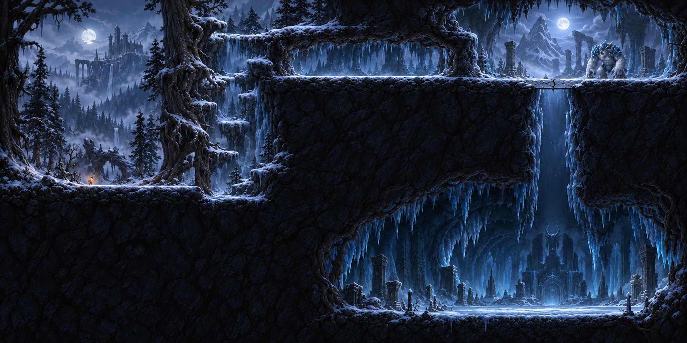
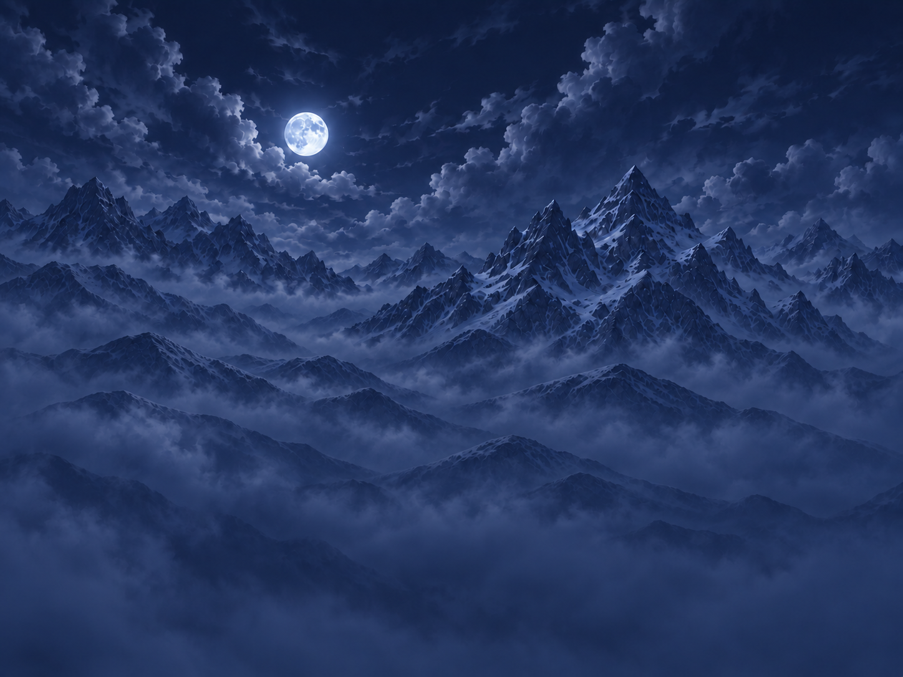
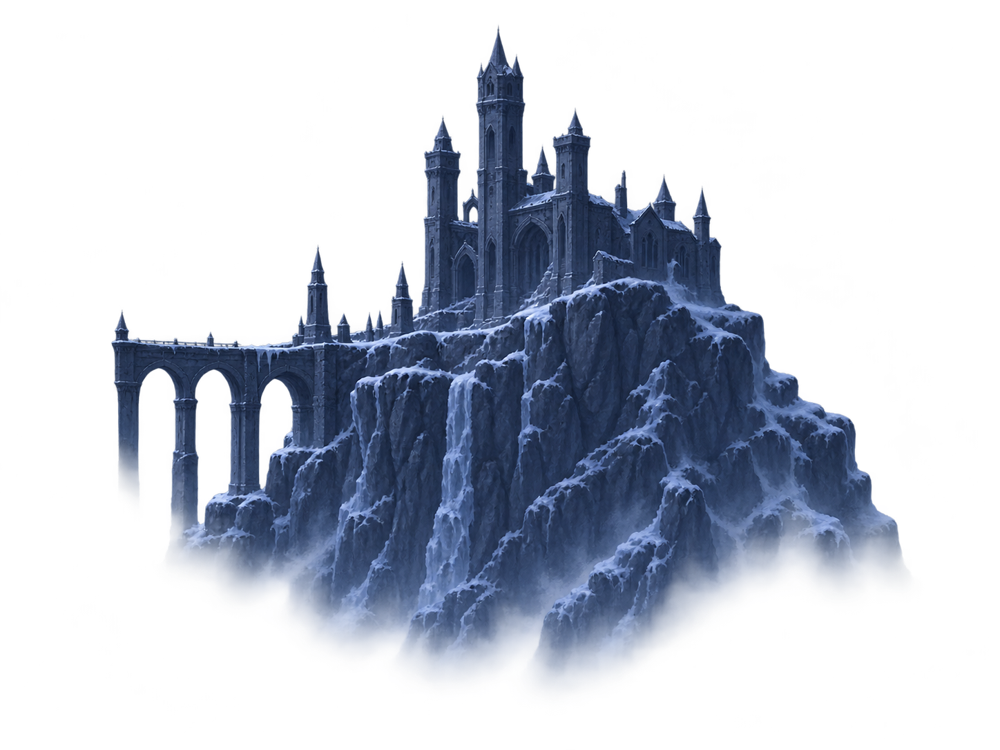
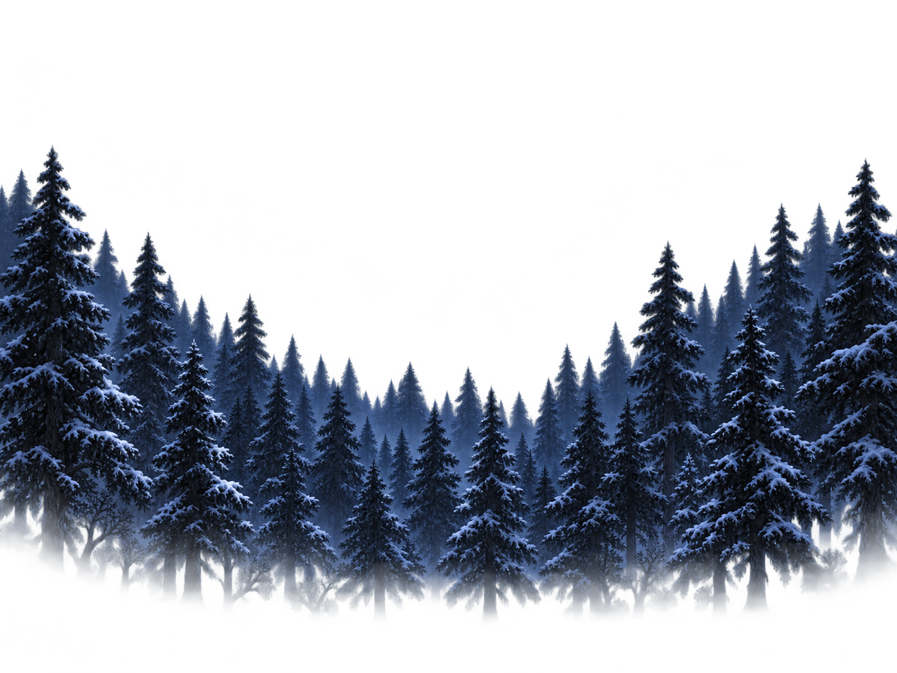

원본 이미지 세 장을 그대로 겹친 배치 시안 · Unity 씬/에셋 수정 없음 · 카메라와 최종 월드 크기는 미정

원본 1774×887 중 좌상단 640×480 영역. 비교를 위한 임시 범위이며, 맵 경계나 카메라 영역이 아님.



달 오른쪽에 성, 다리는 왼쪽. 중경 숲을 위로 9% 이동한 검토안. 고목·지형은 아직 없음.
배치 판단: 성을 화면 중심의 주인공처럼 키우지 않고, 달 오른쪽의 먼 랜드마크로 둔다. 숲은 성·다리 앞, 고목은 그보다 앞으로 배치한다.
남은 차이: 현재 소재는 원본보다 성의 탑이 많고 절벽 폭이 넓다. 산 능선도 원본과 다르므로 위치와 Scale만으로 원본 구도가 완전히 일치하지 않는다.
다음 검토: 중경 숲으로 절벽 하단을 가린 뒤 성의 대비·다리 가시성을 재평가한다. 이 화면은 플레이 화면이나 최종 승인본이 아니다.